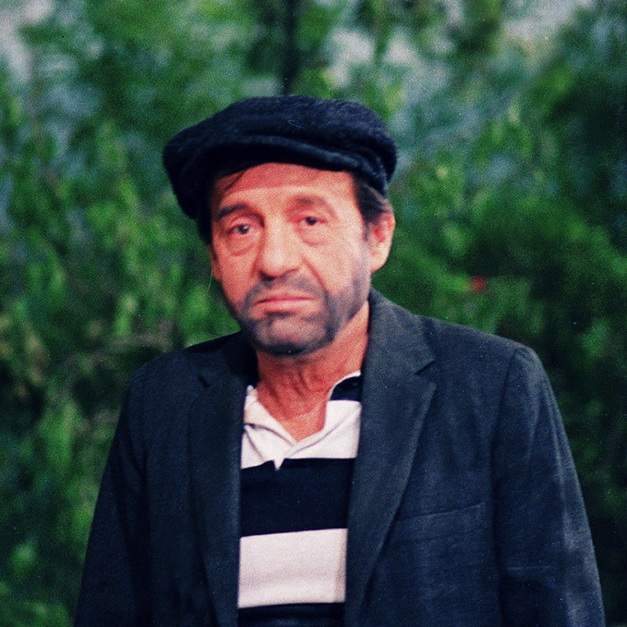

Roberto Gómez Bolaños

Roberto Gómez Bolaños was well known as Chespirito which means "Little Shakespeare".
Roberto Gómez Bolaños was well known as Chespirito which means "Little Shakespeare".
Roberto Gómez Bolaños (21 February 1929 – 28 November 2014), more commonly known by his stage name Chespirito, or "Little Shakespeare" was a Mexican screenwriter, actor, comedian, film director, television director, playwright, songwriter, and author. He is widely regarded as the most important Spanish-language humorist of all time.
He was internationally known for writing, directing, and starring in the Chespirito (1970-1973, 1980-1995), El Chavo del Ocho (1973-1980), and El Chapulín Colorado (1973-1979) television series. The character of El Chavo is one of the most iconic in the history of Latin American television, and El Chavo del Ocho continues to be immensely popular, with daily worldwide viewership averaging 91 million viewers per episode.
For More Information in wikipedia